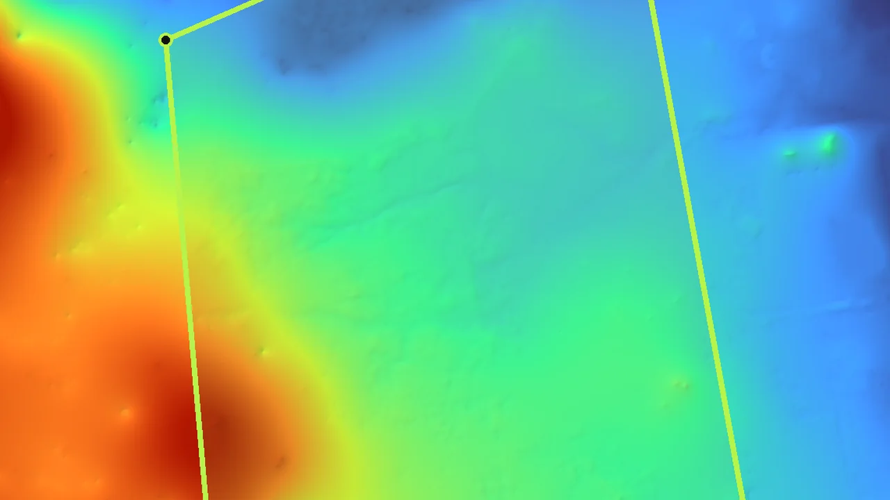
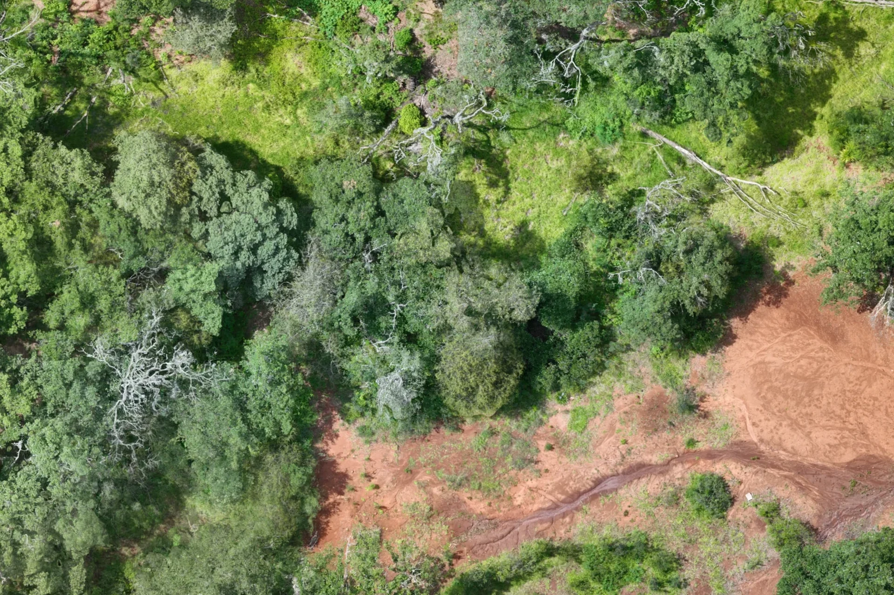
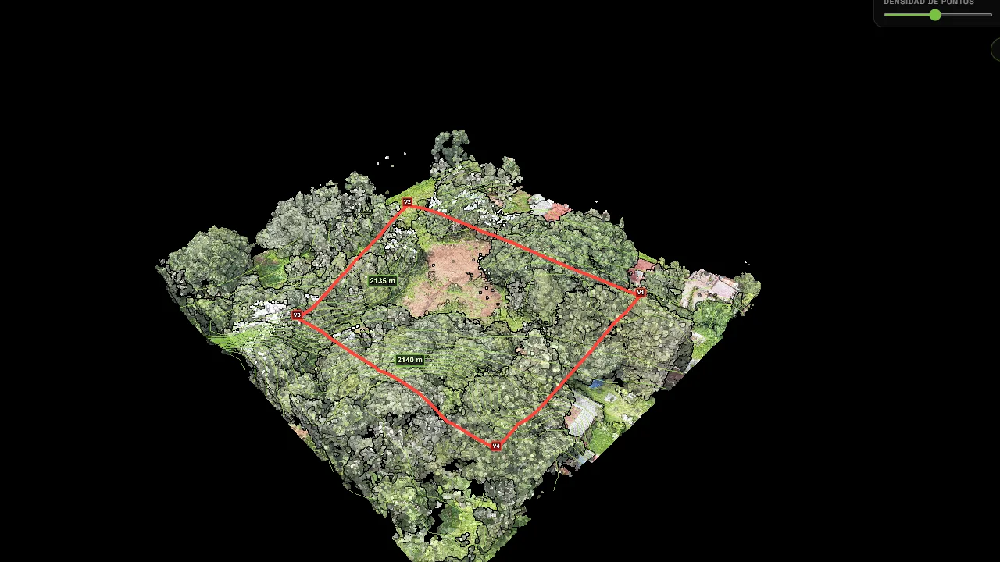
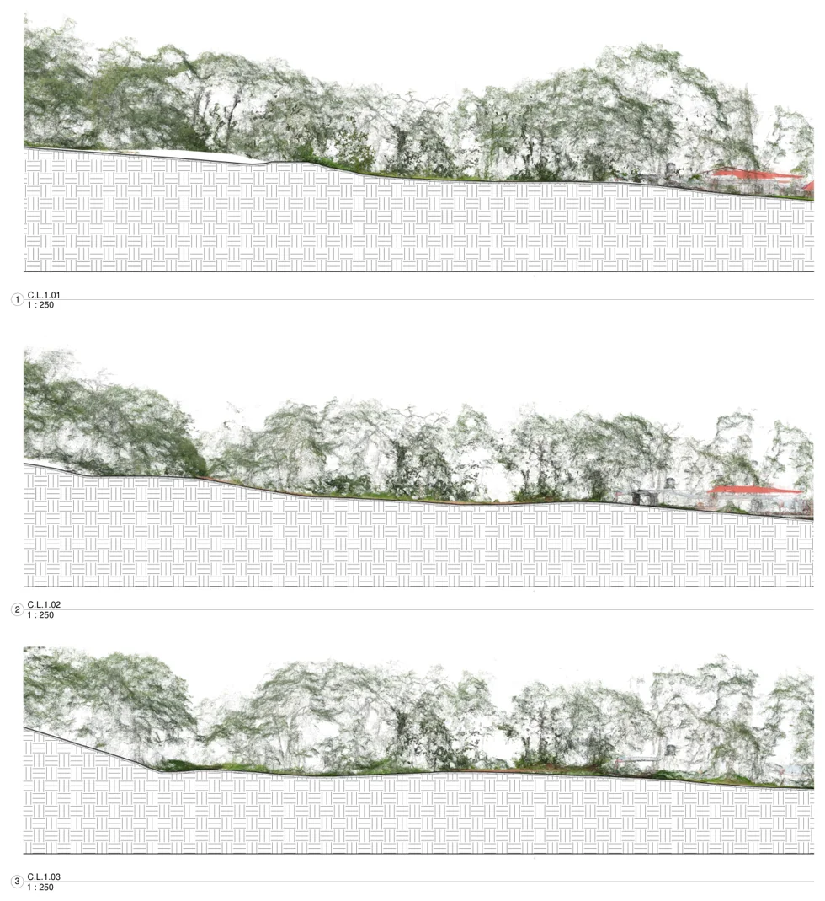
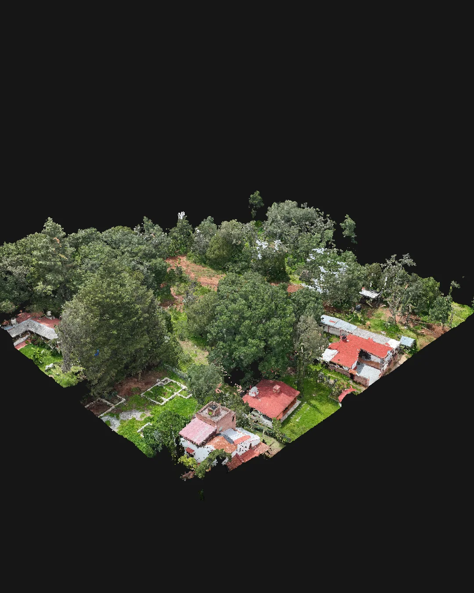

01
Vista de límites
Referencia gráfica del área documentada sobre el levantamiento.

Caso de estudio · Topografía aérea
De una ladera arbolada a una lectura técnica clara: superficie, relieve y contexto reunidos en una experiencia navegable.
Sierra de Hidalgo
El reto
En un entorno boscoso, una fotografía aislada no explica pendientes, transiciones ni la relación entre los elementos visibles. El objetivo fue ordenar la información espacial en vistas complementarias que pudieran explorarse sin software especializado.
El resultado
El levantamiento se procesó como nube de puntos, ortomosaico, modelo de elevación y curvas de nivel. Las vistas se presentan juntas para comparar superficie visible, relieve y forma del terreno.
Esta edición de portafolio omite referencias de identificación y archivos técnicos privados.
Comparador interactivo
Desliza para pasar de la textura RGB a la representación por elevación. La paleta amplifica cambios de altura sutiles; no altera los valores de origen.

RGB ElevaciónCapas del estudio
Texturas, vegetación y elementos visibles en su contexto.
Información que se entiende
No se trata de acumular archivos. Se trata de presentar cada lectura en el formato que mejor explica el terreno.

Referencia gráfica del área documentada sobre el levantamiento.

Cortes visuales para observar cambios de nivel a lo largo del sitio.

25,131,914 puntos procesados disponibles como lectura tridimensional.
Muestras preparadas para portafolio. No contienen descargas ni referencias privadas.
Nube de puntos interactiva
Gira, acerca y cambia el modo de representación desde el navegador. La demostración está preparada específicamente para portafolio.
Experiencia WebGL · Carga bajo demanda
El visor se cargará una sola vez al activarlo.
El visor no respondió en esta ventana.
Abrir la experiencia en una pestaña nueva ↗De campo a pantalla
Cobertura planificada para registrar textura y geometría visible del sitio.
Las imágenes se integran en una nube densa y superficies continuas.
RGB, elevación, MDE y curvas se revisan como un mismo sistema.
Los resultados se organizan para consulta en escritorio o celular.
Lectura integrada
Tu siguiente proyecto
Medir bien cuesta menos que corregir después.
Platicar por WhatsApp